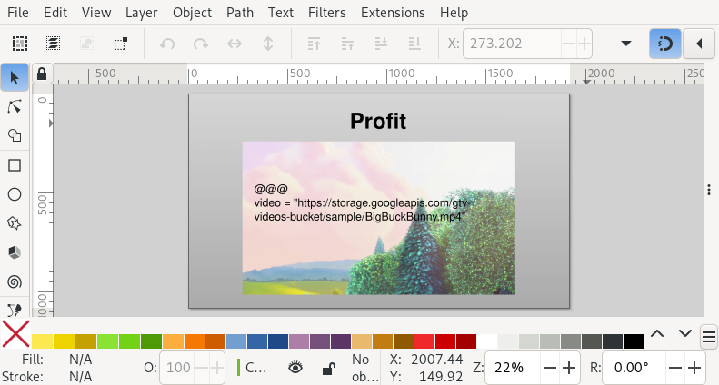

Slidie Guided Tour¶
This document provides a very high-level guided tour of many of Slidie’s main features, with links to more in-depth documentation.
Part 0: Creating slides¶
Lets start by creating some very simple slides. This is as easy as creating slide-shaped SVGs using Inkscape.
A 1920×1080 pixel page size works well for slides and can be set in the ‘Document Properties’ panel (found in the ‘File’ menu).
Since slides are usually intended for screen display it makes sense to switch the default display units to pixels too.
Each SVG file’s name must begin with a number which controls the order in which the slides will be included in the show. For example, you might name your files like:
100 - Title.svg200 - Overview.svg…
1400 - Conclusions.svg
Part 1: Rendering slides¶
To render your directory full of SVG files into a slide show, use the
slidie command:
$ cd path/to/slides/
$ slidie
By default, slidie will build the slides in the current directory into a
standalone XHTML file called out.xhtml. This can be opened directly in your
web browser (no server required). Slidie XHTML files are completely
self-contained and can be distributed independently of the source SVG files.
You can override the output filename using the --output/-o argument:
$ slidie --output my_presentation.xhtml
Slidie can also render your slides as a PDF: just specify a .pdf filename:
$ slidie --output out.pdf
In general, the XHTML format supports more features (e.g. videos and presenter view) whilst the PDF format is more useful as a distribution or archival format.
See also
- Supported output formats
For a comparison of all supported output formats.
- The Slidie XHTML Viewer
For more details on the functionality of the XHTML viewer application.
Part 2: Reordering slides¶
Using BASIC-style numbers for your slides (e.g. incrementing the number by 10 or 100) makes it easier to reorder slides by renumbering them. For example, given the following:
100 - a.svg
200 - b.svg
300 - c.svg
You can move the slide ‘C’ in-between ‘A’ and ‘B’ by renumbering it to 150.
To make this process easier, Slidie includes the slidie-mv command. You
could achieve the same reordering as the example above using:
$ slidie-mv "300 - c.svg" --before "200 - b.svg"
You can alternatively use --after <slide>, --start or --end to
specify the target location. You can also move several slides in one go.
If necessary, slidie-mv command will automatically rename a minimal number
of adjacent slides if no gap in the numbering is available.
See also
- Slidie file numbering/naming rules
For more slide numbering suggestions and rules.
- slidie-mv: Slide renumbering tool
Full command usage reference.
Part 3: Building up slides step-by-step¶
Sometimes it is useful to build up the displayed contents of a slide over several steps. Slidie allows you to reveal (or hide) layers step-by-step by adding special annotations to layer names.
The simplest type of annotation looks like <1> or <2-4> and indicates
that the layer should be visible only during step 1 or steps 2, 3 and 4
(respectively). The screenshot below shows an example SVG which specifies a
slide where different layers are displayed at different points in time:
{kind=link}

The resulting four steps are shown below.
In this example, the layer named ‘Arrows <1->’ only becomes visible from step one (note that the first step is number zero). The ending step is omitted meaning the layer will be visible on all remaining steps.
The two ‘Highlight …’ layers are only shown for a single step (specifying step 2 and 3 respectively).
Layers without a build step annotation will be visible on all steps (or hidden if you’ve hidden them in Inkscape).
The complete syntax for build specifications includes many more features including automatic numbering and connecting the visibility of groups of layers. See the documentation for a complete introduction.
See also
- Builds
For a complete introduction to Slidie’s build syntax.
Part 4: Adding speaker notes¶
To add speaker notes to a slide, create a text box and type ### (three
hashes) followed by a newline. Add your speaker notes to the remaining lines.

When the slides are rendered, the notes will be displayed in the notes area (and presenter view) of the XHTML viewer.

Whilst text formatting applied to the speaker notes in your source file are lost, the notes will be formatted as Markdown in the XHTML viewer.
Though it is probably most readable to place your speaker notes off the side of the page in your SVG, it is not necessary: Slidie removes the text from the slide during rendering.
If you place speaker notes on layers selectively displayed during a build up, those notes will be shown faded-out in the viewer before that build step is reached.
See also
- Speaker notes
For full details on creating and using speaker notes.
Part 5: Creating hyperlinks between slides¶
Hyperlinks can be created in Inkscape by right clicking an object and clicking
‘Create anchor (hyperlink)’ and entering a URL in the ‘Href’ box of the ‘Link
properties’ panel. Links can also be created within a slide show using links
like #4 which creates a link to the fourth slide (slides are numbered from
‘1’).

You can also link to a specific build steps like #4<2>
which links to build step 2 on slide 4. Links to build steps on the current
slide can omit the slide number (e.g. #<2>).
Tip
The XHTML viewer places the current slide number in the URL bar.
See also
- Creating hyperlinks between slides
For a complete introduction to the inter-slide link syntax. You can also learn how to reference slides and steps using names rather than rather brittle slide and step numbers.
Part 6: Adding a video clips to slides¶
Slidie supports the inclusion of a number of dynamic elements not natively supported by SVG such as videos and iframes (embedded web browsers). These inclusions make use of a Slidie feature (nerve-wrackingly) called ‘magic text’.
To insert a video into a slide, first draw a placeholder rectangle or image where the video should appear. Next, add a text box containing something like the following:
@@@
video = "path/or/url/to/video.mp4"
Finally, combine the placeholder and text in a group (e.g. using Ctrl+G).
The @@@ syntax marks what follows as a ‘magic’ text
block which Slidie will treat specially. In this case, we’ve indicated that we
want to substitute the placeholder with a video player. When we render our
slide we get something like this:

In PDF and PNG outputs (where videos are not supported) Slidie will only show the placeholder.
Warning
There are quite a few caveats around Slidie’s video support (seemingly like every other slide preparation tool…). Make sure to read the full documentation for details.
See also
- Video
For further details of Slidie’s video embedding support.
- Automatic video placeholder generation
The
slidie-video-stillscommand can automatically substitute a placeholder rectangle with an image placeholder in slides.- Creating <iframe> elements
For how to conveniently embed iframes (i.e. web browsers) into slides. This is a potentially powerful mechanism for injecting complex interactive or live data connected elements into slides.
- Magic text
For details of the magic text syntax and its other uses.